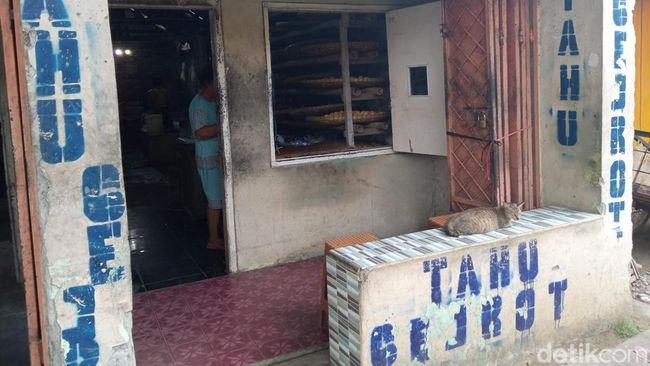

Tahu Gejrot berasal dari Desa Jatiseeng, Kecamatan Ciledug, Kabupaten Cirebon. Makanan ini awalnya muncul dari pabrik tahu milik keturunan Tionghoa sebelum tahun 1950-an. Setelah pemilik pabrik meninggalkan usaha mereka, mantan pekerja memutuskan untuk memproduksi tahu sendiri dan menjualnya. Seiring waktu, usaha ini berkembang dan menjadi kuliner khas Cirebon.
Nama "Gejrot" berasal dari suara "jrot jrot" yang terdengar saat air gula merah disiram dari botol ke atas tahu dalam piring gerabah.
1️⃣ Potong tahu pong menjadi beberapa bagian dan goreng hingga kering.
2️⃣ Haluskan bawang merah, bawang putih, cabai rawit, dan garam.
3️⃣ Rebus air hingga mendidih, lalu masukkan gula merah dan larutan asam jawa. Aduk hingga larut.
4️⃣ Tambahkan kecap manis dan aduk hingga merata.
5️⃣ Sajikan tahu goreng dalam piring, lalu tambahkan bumbu halus.
6️⃣ Siramkan kuah gula merah ke atas tahu.